A little universe for two.
Dearloop is a private little world you share with your person: an island and a cottage, a pet you raise together, a question a day, games, drawings and every memory, kept. Made for long-distance couples, and lovely for any two.
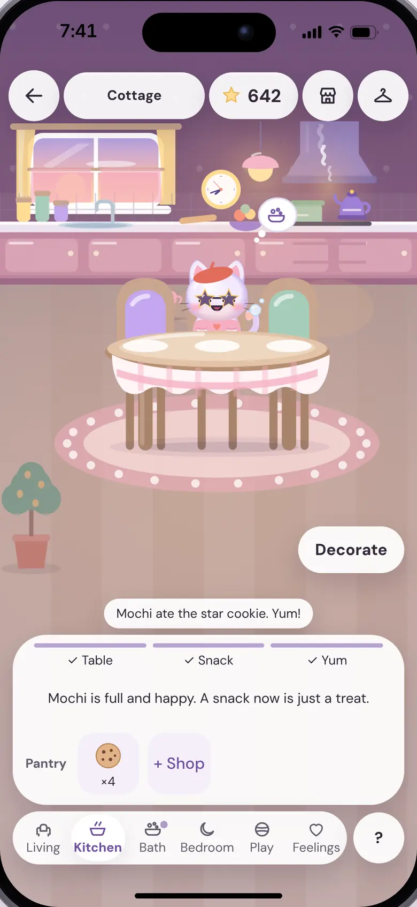
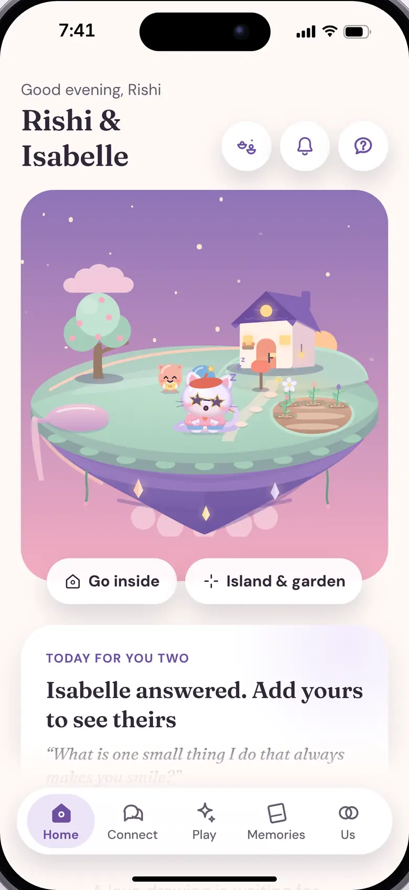
A short tour, start to finish.
- Say it.
- Play it.
- Keep it.
The real app, start to finish: making your little blob self, inviting your person, the cottage, the games and the memories. It has music, so it waits for you to press play.
Your world.
A floating island with a cottage and a pet you raise together. It’s yours to wander, decorate and look after, whenever either of you has a minute.
Your islandThe two of you, your pet and your cottage, in the light of your own time of day. Snack time at the tableCall your pet to the kitchen table and share a snack. 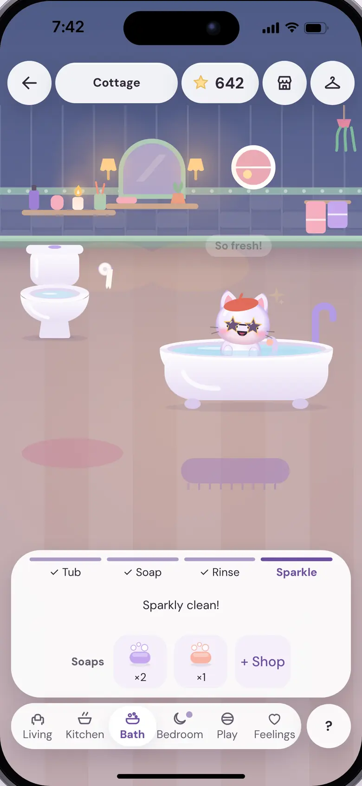
Bubbles and sparkleTub, soap, rinse, sparkle. A bath is a little scene of its own.
- A cottage, room by room: a kitchen, a bathroom, a bedroom and a playground with a slide, a swing and a seesaw.
- Decorate together: move furniture and paint the walls, with Undo when you change your mind.
- Pets that ask, kindly: a little wish when your pet would love a meal, a bath or a play. Never sad, never in your quiet hours.
- Choosing a pet is for two: one of you suggests, the other agrees, picks another or suggests a name.
- A garden that grows: plant seeds with a dedication and water them together.
- Round blobs, never people: make your own little blob self, and a different one in each world you share.
Say it.
Little ways to reach each other across any distance, from one question a day to a hug at the tap of a button.
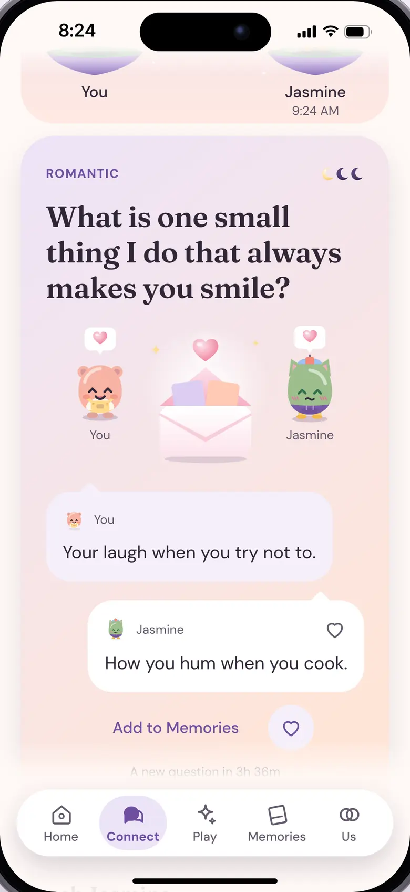
One question a dayAnswers open only when you’ve both replied, so neither of you peeks first. 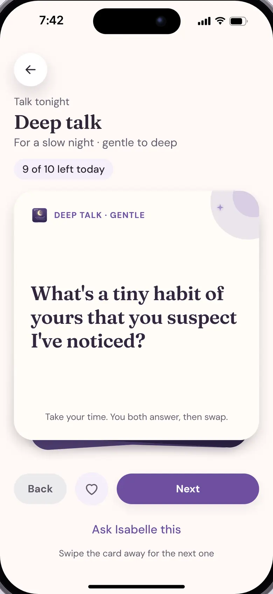
Talk tonightCard decks for slow nights, turned over by hand. 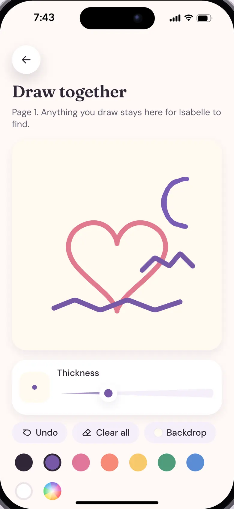
Draw together, liveOne page, two pens, and you see each other’s lines appear.
- Hugs and Love touch: a hug, a love tap, or a Love touch they feel as a heartbeat.
- Letters: longer words in soft stationery, timed for their morning if you like.
- Moods and Pass the day: how you are, and the best bit of your day, in a tap or two.
- Ask each other: your own questions, and decks of ideas when you’d like a nudge.
- A Spicy corner, if you both want it: two optional decks for adults that open only when you have both switched them on.
- How far apart: your two places and the miles between you, only if you turn it on.
Play it.
A little fair that’s always evening. Games for one that never run out, and games you play together.
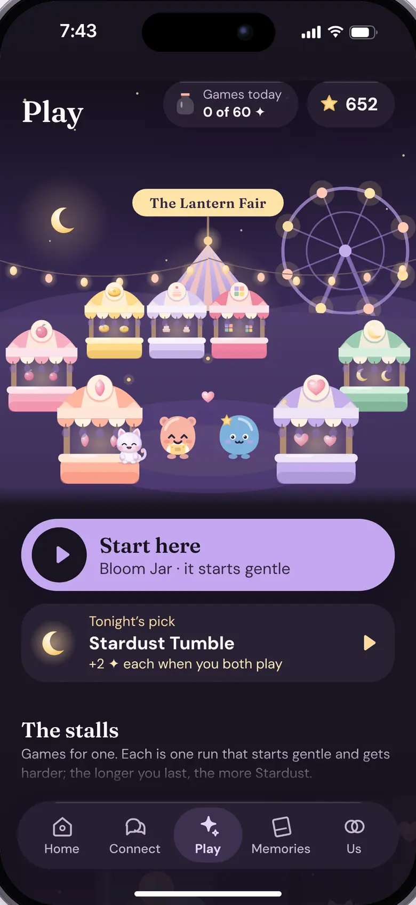
The Lantern FairEach lit stall is a game. Your pet comes along for every run. 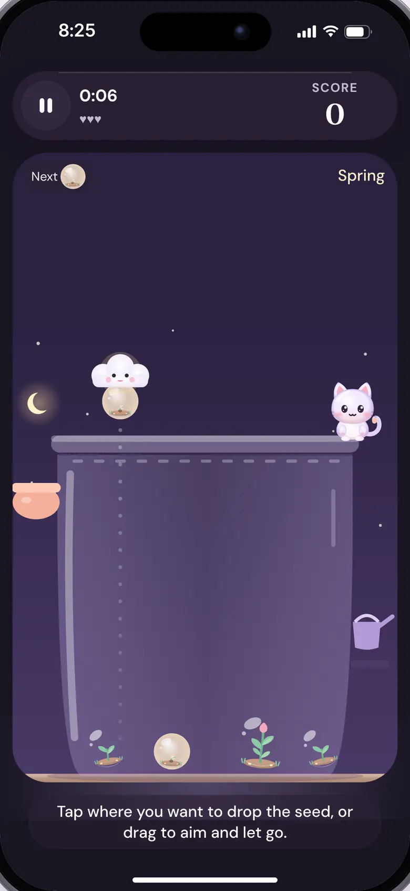
Endless runsNo levels and no stars to chase: one run that slowly gets harder, and a little Stardust for every one. 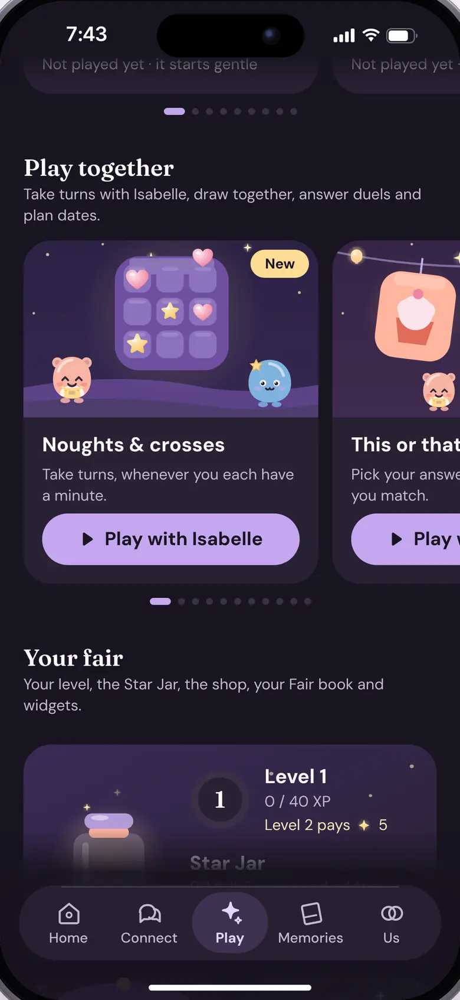
Games for twoLantern Seek, Read My Sky and more, played together or in turns.
- Lantern Seek and Read My Sky: two new games made for two people.
- Stardust: earned by playing and caring for your pet, and spent on food, furniture and new places. It can never be bought.
- Button controls: if you’d rather tap than drag, every game has them.
- Game music: soft tunes made for Dearloop, with their own switch.
Keep it.
Everything you make together has a home: answers, letters, drawings and snapshots, in galleries and albums of your own.
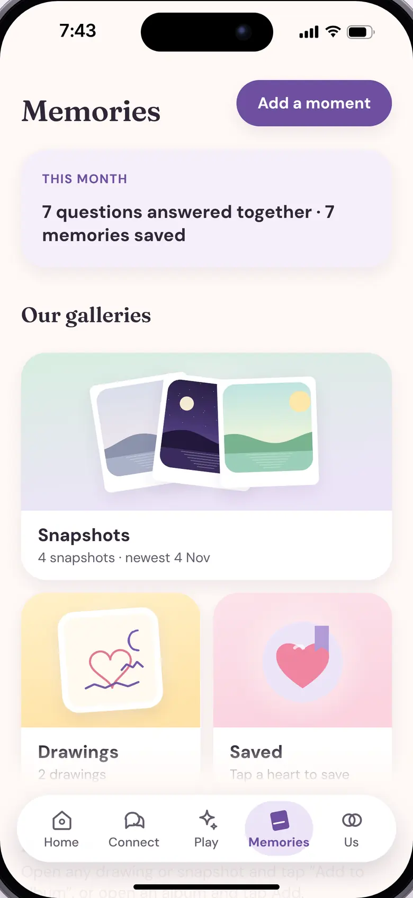
MemoriesSnapshots, drawings and the things you saved, gathered in galleries. 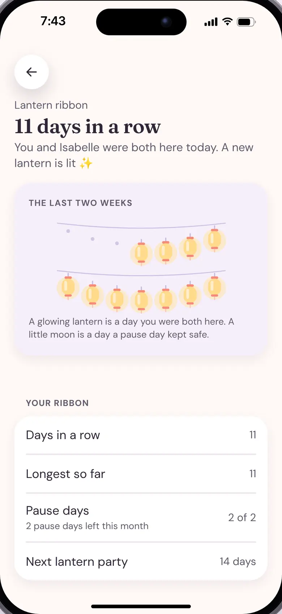
The lantern ribbonA lantern for every day you both showed up, and a little party at the big ones. 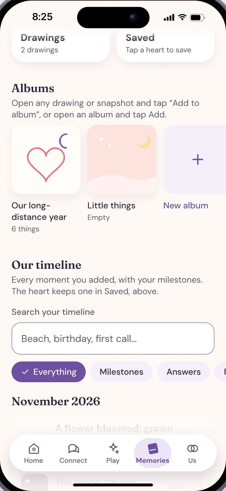
Albums and a timelineMake albums, and add milestones to your timeline.
- Saved, for both: tap the heart on anything and it waits in your shared Saved folder.
- Pause days: a missed day can be paused, so the ribbon stays lit.
- A copy of everything: download a copy of all of it, any time, to keep or print.
Close, at a glance.
Your person on your Home Screen and Lock Screen, and notifications that sound like them, never like an app shouting.
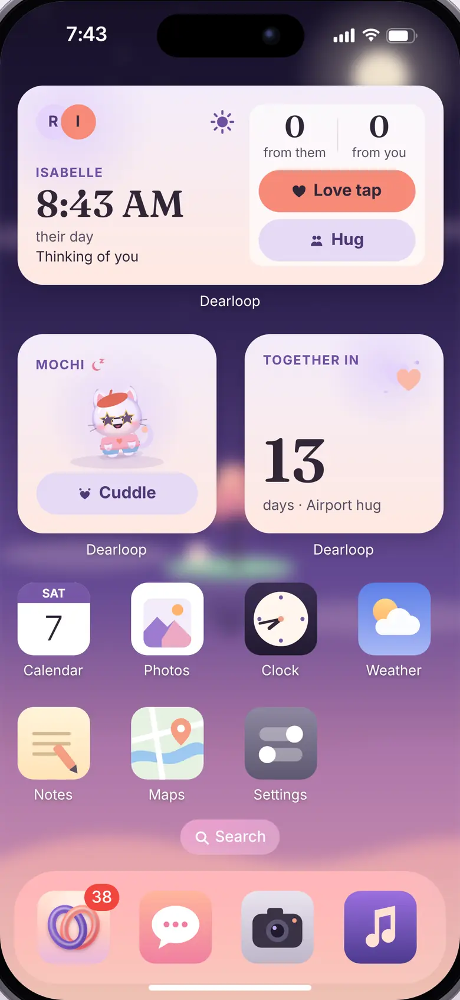
WidgetsTheir time of day, days together, your pet, and Love tap and Hug buttons right on your Home Screen. 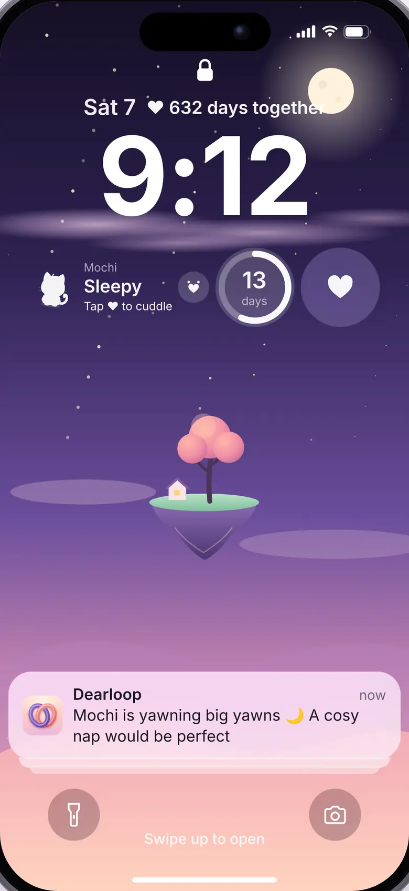
Gentle notificationsWords that sound like your person, and one quiet summary after your quiet hours. 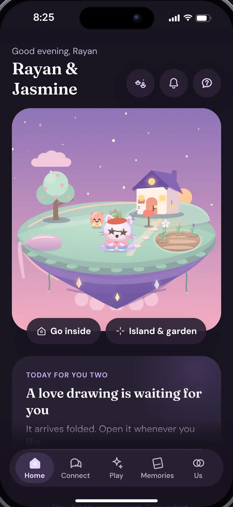
Light and darkDearloop follows your phone, by day and by night.
- Widgets never show what you write: answers, letters and drawings stay inside the app.
- Quiet hours: anything that arrives at night waits for your morning, in your own time zone.
- Plus widgets: five richer ones: Our island, Two skies, Pet family, Our week and Goodnight.
- iPhone and iPad: made for both, with Apple Pencil pressure when you draw.
Lately, in Dearloop
Dearloop isn’t in the App Store yet. These are the newest versions, being tested on iPhone and iPad now.
A quicker, smoother tour film
- The tour film now runs about a minute, moves smoothly from start to finish, and has bright, bouncy new music. It still shows every part of Dearloop.
Warmer notifications, a new icon and a new film
- Notifications sound more like your person, use the name you call each other, and gather into one gentle summary after quiet hours.
- A new app icon: two linked rings in a peach dawn, with a moonlit version for dark mode.
- A new tour film of the whole app.
- Meals, bedtime and cuddles now have soft little sounds (only with Sounds on). Your pet is the same size in every room.
A calmer cottage
- One message line at a time, one Call button, and simple word-by-word steps for meals and baths.
- Decorating has its own bar with Undo and Save, and soft footprints that show where a piece can go.
Your pet, your choice
- Not hungry? Dearloop asks “Feed anyway?” and lets you choose, every time. The same for a bath.
Earlier updates
Pets that ask for you, kindly
- When your pet would love a meal, a bath or a play, it can send you a little wish: up to four a day, never in quiet hours, and never sad. When one of you cares, the other isn’t asked.
- Five new Plus widgets: Our island, Two skies, Pet family, Our week and Goodnight. Every earlier widget stays free.
- Card decks turn crisp and clear, and a small chip shows how many cards are left today.
- DearHelp, the guide inside the app, answers with clear numbered steps.
Play with your pet any time
- No timers for play, cuddles, naps or the potty. A full or freshly bathed pet just says so, kindly.
Every world, its own welcome
- Each world you share has its own names and its own little you.
- Dearloop opens faster, and photos and voice notes have a clear storage allowance you can see and manage.
Endless games and two new games for two
- Every solo game is one endless run that slowly gets harder. No levels, and every run earns a little Stardust.
- Lantern Seek and Read My Sky: two new games you play together.
- In the Shop, watch a short video for Stardust, only if you want to.
Table meals, a playground and choosing a pet together
- Call your pet to the kitchen table and share a snack. A new playground has a slide, a swing, a seesaw and more.
- Every new pet is a decision for two: one of you suggests, the other agrees, picks another or suggests a name.
A gentler start, and new widgets
- Making your world and inviting your person is quicker, with an invite link that never shows your name.
- Your garden tells you what it needs next, and your pet strolls around the island.
- Two new widgets: How far apart and Today together.
Free to love. Plus if you like.
Everything you need to stay close is free. Dearloop Plus is an optional subscription with more Stardust, more pets and a few extras.
Always free
Nothing to do with reaching your partner is ever behind Plus.
- Hugs, love taps and love touches
- Letters and love drawings
- The daily question and Ask each other
- Pass the day, moods and status
- Snapshots, memories and albums
- The monthly check-in
- The Spicy corner
- Every game, nothing locked
- Every everyday widget, and “Together soon”
- Your pet, garden and lantern ribbon
- A copy of all your data
Free has optional short videos for Stardust, pet snacks or more question cards. They play only when you tap Watch.
Dearloop Plus
US$4.99 a month or US$39.99 a year
The yearly plan may start with a free week. Your App Store shows the price where you live.
| What | Free | Plus |
|---|---|---|
| Monthly Stardust | None | 1,000 each, every monthFor both of you, in each world with Plus. |
| Pet food | Buy with Stardust, or watch a video | 1 free food or soap every hourAny food in the Shop. Other food is bought with Stardust on both. |
| Stardust from games | Up to 30 a run, 60 a day | 3×: up to 90 a run, 180 a dayA run pays by how long it lasts. Star Jar 4–6 on Free, 12–18 with Plus. Level-ups pay 3×. |
| Pets in a world | 1 | Up to 14, one of each kindEach extra pet costs 1,800 Stardust. Pets you have always stay. |
| Widgets | All everyday widgets | + 5 Plus widgetsOur island, Two skies, Pet family, Our week and Goodnight. They show your main world. |
| Question cards | 10 a day, +10 per short video | UnlimitedOne count for every deck: Talk tonight, Ask each other ideas and the Spicy decks. Today’s question, your own questions and anything your partner sends are always free. |
| Ads | Optional videos, only if you tap | None, unless you choose to watch one |
Every other difference
| What | Free | Plus |
|---|---|---|
| Game XP a day | Up to 300 | Up to 600 |
| Everyday Stardust | Standard | 2× to 3×Questions, pet care, the garden, letters, wishes, check-ins and the weekly challenge. |
| Themes and decorations | Everything in the Shop | + Aurora, Golden hour and Fireflies |
| Homes and islands | 6 to buy with Stardust | + Moon base and Mushroom hollowPlus places are bought with Stardust too. |
| Pause days | 2 a month | 4 a monthThey keep your lantern ribbon safe on a missed day. |
| Lantern parties | 5–50 Stardust | 15–150 StardustAt 3, 7, 14, 30, 50, 100, 200, 365 days in a row. |
A Plus subscription covers one world, the one its buyer chooses. Both of you have Plus there. Cancel any time in your App Store account; if Plus ends, nothing is deleted.
Only the two of you.
No public profiles, no strangers, nothing to scroll. Just your world.
- Only the two of youYour world is seen by you and your partner, and nobody else. The database itself enforces it, not just the app.
- Encrypted, honestlyEverything is encrypted in transit and at rest. Dearloop is not end-to-end encrypted, and we’d rather say so plainly.
- Never soldWe never sell your data or share what you write. Optional videos use non-personalised ads.
- Nothing private on showWidgets never show what you write. Answers stay hidden until you’ve both replied.
- Yours to keep or deleteDownload a copy of everything, or delete your account, any time, right in the app.
- For adultsDearloop is for people aged 18 and over. The Spicy decks open only when you both switch them on.
The details are in our privacy policy. This website sets no cookies and loads nothing from anywhere else.
Start your little world.
Questions? DearHelp inside the app knows how everything works, and we’re here too.